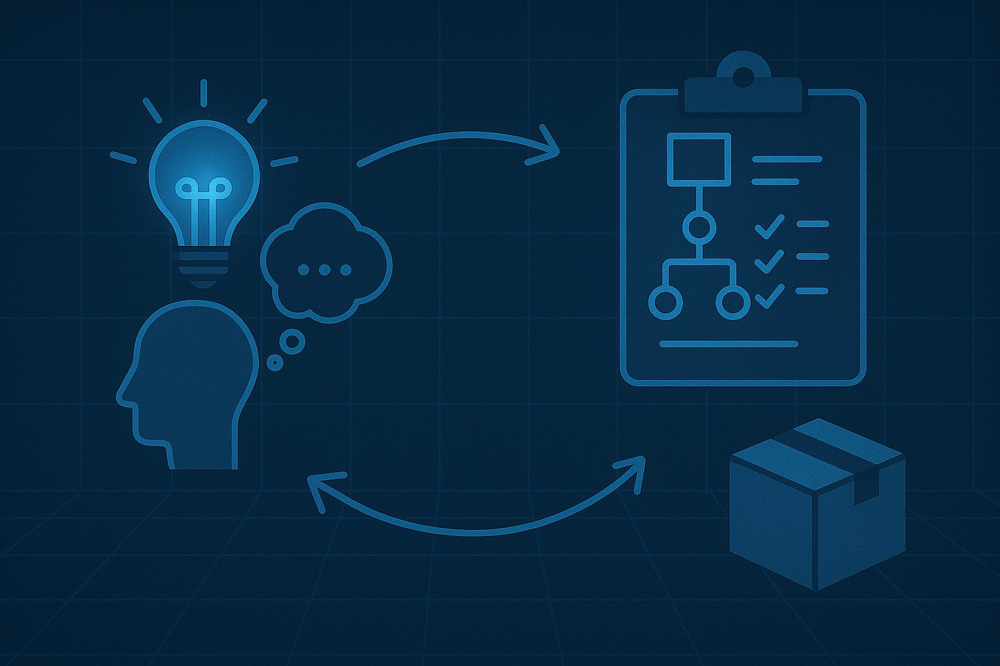

How Michelangelo’s obsession with anatomy transformed David from a block of marble into a lifelike masterpiece grounded in biological truth.
Documenting the physical fabrication of our model—from slicing and printing to sanding and assembling—with modern tools and timeless precision.

From idea to execution — tracing the steps taken to digitally reproduce one of history’s greatest sculptures with precision and care.
Testing formats, fine-tuning lighting, optimizing interactivity — the prototype phase brought David to digital life for the very first time.
With the power of WebGL and model-viewer, we enabled real-time viewing of the statue — allowing anyone to explore it in detail from any angle.
David is more than sculpture. This project explores what happens when timeless culture meets modern innovation in a fully digitized format.
We believe in open access to culture — this platform is our way of making masterpieces like David visible and tangible to the world.
From photogrammetry to rendering and browser integration — explore the technical wizardry that makes David’s digital twin come alive.